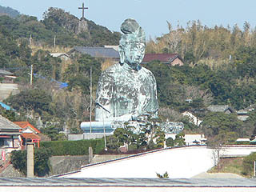

生月大魚藍観音/長崎県生月町
平戸島と生月島を結ぶ生月大橋を渡ると最初に目に飛び込んで来るのがこの大観音。
生月観音である。
舘浦漁港を見下ろす絶好のロケーションに位置し、生月島のウエルカムフルーツと化している。カクレキリシタンの島なのに。
高さは18メートル、基段部が3メートル計21メートル、高い建物の少ない生月で高台の上にあるその姿はまるで灯台のようでもある。
ちなみに大観音の左斜め後に山田教会が見える。すぐ近くなんです。

港から見た大観音、どうやら座像のようだ。
後方には十字架が立っている。この十字架は生月最初の殉教者であるガスパル西玄可（ガスパルサマ）がこの地で殉教したのを記念して建てられたものである。十字架は生月島の沖にある中江ノ島に向けて建てられている。この中江ノ島もジョアン坂本ら（現在もカクレキリシタンの間ではサンジュアンサマといわれ信仰対象となっている）が殉教したカクレキリシタン信仰上重要な聖地である。
このような濃密なカクレキリシタン信仰の島にあってこの大観音だけがそぐわないような気がしてならない。
ま、私は好きだから良いんですけど。
ちなみにカクレキリシタンの島といっても「かつては」大勢いて、今も少数ながら存在している、というだけで島民全員がカクレキリシタン信仰を行っている訳ではないので、念のため。
早速大観音にアプローチ。周辺は黒い屋根瓦が美しい落ち着いた漁業の町である。そぐわないのは大観音ばかりなり。
坂道を登ると、段々大観音が近付いて来ました。それにしても垣根ビッチリ刈り込んでますね。
で、これが生月観音の全容である。像高18メートルはブロンズ像としては日本一だそうで・・・そうかなあ？
世界の平和と海難者および魚介類の供養、漁船の航海安全を祈念しているそうな。
実はココには数年前に来た事がある。その時に比べても表面がかなり痛んできている。やはり海の近くはブロンズも腐食が早いのだろうか？
この大観音、良く見るとな〜んか足が変だ・・・
・・・ああああっ！足じゃない！
胡座を組んでいるように見えた足の部分は、足ではなく単なる波型の台座だ。
つまりこの大観音は座像じゃなくて波型の台座の上に乗っている半身像、つまり大船観音みたいなモノじゃないですか。
前に来たは時間がなくてパッパッパっと見ただけだったので全く気付かず数年間ここの大観音は座像だとばっかり思っていた〜！
この「胡座をかいているように見える波型」スタイルは偶然そう見えるのか、それとも胡座をかいているように見せたのか、どちらかは判らないが後者であるのならばそんな紛らわしい事をするなら最初から足を造っちゃうだろうし、やっぱり偶然なんでしょうか。もしかしてトリックアート？
この大観音は釜石大観音と同じ魚籃観音なので買い物かごにお魚を携えている。
ま、漁業の盛んな島ですから。
築25年。そろそろリフォームの時期とお見受けした。
大観音の下の基段部の左右には入口があり、中に入る事ができる。
中には大観音の原型が。原型も波型の台座だった。原型制作は阿部正基氏。日展の会員でいわゆるバリバリの昭和彫刻家だ。
原型（本尊か？）の周囲には建立の由来などが色々と書かれていた。それによるとこの大観音は金子氏が発願したものだという。金子氏は長崎出身の中曽根大平内閣の閣僚で、いわゆる長崎政財界を牛耳っていた人物で、この大観音の正面の額字も自身で手掛けている。肩書は国務大臣。
カクレキリシタンの島で大観音、というだけでピンと来ないのに、まあ、いっちゃあナンですけど大臣がツルの一声で建てた大観音。
地元の人の受けはどうなんでしょうか。
サイズ的にも胎内巡りとかは勿論あるはずもなく草々に外に出る。
信仰と政治と経済が複雑に入り交じった生月島の現状を垣間見たような気がした。
後ろから見た図。海を眺める観音様。
これほどいいロケーションの大観音もそうそうない。大きさ的にチトきついが胎内に展望スペースなどがあればもっと良かったのに。
展望が良かっただけに惜しまれる。
こうして後ろから見たらモロ半身像ですね。
2005.2.
珍寺大道場 HOME